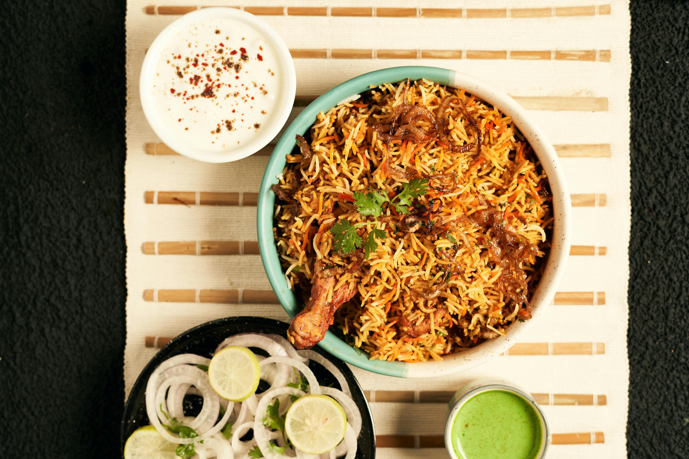

Chicken Biryani Recipe

Photo by Dhiraj Jain
Description
Behold! An authentic Chicken Biryani recipe with simple, easy-to-follow instructions (no curveballs!) and mouthwatering,
traditional Pakistani and Indian flavor. This recipe includes tips on how to get fluffy rice, tender chicken, and the
distinct biryani taste. Tested to perfection!
Ingredients
- Oil/Ghee
- Onions
- Bone-in, cut up, skinless chicken
- Whole spices
- Garlic + Ginger
- Tomatoes
- Yogurt
- Rice
- Dried Plums (Alu Bukhara)
Steps
- Prepare the chicken curry: Prepare the biryani masala (or use store-bought) and marinate the chicken. Start
the chicken curry. While the chicken cooks over low heat, make the rice.
- The rice: Bring a pot of water to a boil and parboil the rice. Drain and set aside.
- Bring it all together for a final steam (‘dum‘): Layer half of the rice, all of the chicken, and then the remaining rice on top.
Add the finishing touches. Allow steam to develop, then lower the heat and let the flavors meld.
Home